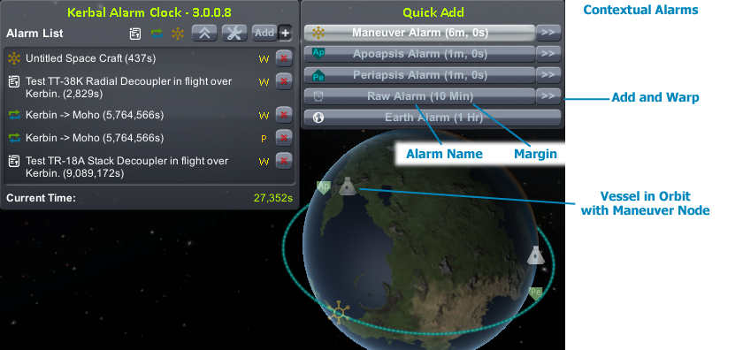
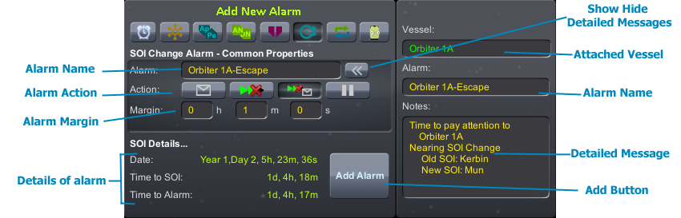

You will see this in the upper left of your screen alongside the MET/Warp indicator. You toggle the display of the other parts of the interface by clicking on the icon or pressing Alt+F11. Alarms that are set will fire and display, even if you hide the main window. The color of the icon indicates the state of the alarm clock as below.
| Loaded and no future alarms | Visible and no future alarms | Loaded and Alarms pending | Visible and Alarms Pending | Alarm Clock is currently affecting Warp Rate | Alarm Has fired and paused game |
 |
You are able to interact with the Alarm Clock in Flight, in the Space Center and in the Tracking Station. The default icon location is i the upper left corner
It's position can be adjusted using the Settings->Visibility tab, and in here you can also control the position of the icon on the screen.

Across the top of the Main Window you will see the following:
This portion of the window displays a list of the alarms that have been configured (except in Minimal mode when it only shows the next future alarm).The window has a configured max number of alarms, once this is reached it will stop growing and a scroll bar will appear. Each alarm presents the same details on its row:
This displays the current date in the game universe. Clicking on the date will toggle between the three time formats - UT (raw seconds), KSP formatted dates and standard dates.
By clicking on the Current Time: text at the bottom you can toggle an extra line of display that will show the current time on your PC. From this line you can then also add an Alarm based on real world time - possibly to remind you its time to take a break :). These alarms will show up in the alarm list as per normal, but obviously will not be affected by time warp.
Note: When the game is paused the real world alarm will not fire until the game is unpaused
Clicking the Plus next to add will give you the option to quickly add, and warp if you want, to a contextually related alarm to the situation you/your vessel are in. Below you can see more details:
This window has some common elements, and then some specifics for each alarm type. The below annotated picture highlights what each is, and the text below describes them:
If you click on the name of an alarm in the list it will open a window with some more details.
If the alarm fired in the past then you will simply see some details including time, name and message
Will display fields to allow you to edit the name, message, alarm action and margin
As well as the close window button you will get a button to Jump to Ship button if the active ship is not the ship the alarm has been attached to
This window has some common elements, and then some specifics for each alarm type. The below annotated picture highlights what each is, and you can get the details from the Common Elements section above
Allows you to enter some raw time stuff to create an alarm, you can choose to create this as a Date (time from the beginning of the Kerbin Universe) or an Interval (time from now).
You can choose whether to associate this alarm with the active vessel or not.
Will look at the next Maneuver Node on the flight path and allow you to create an alarm at this point. When you create this alarm type it will store the Maneuver Node’s details and allow you to restore this back at a later time.
You can choose to add alarms for any of these nodes on the flight plan. Once created the Alarm Clock will monitor the flight path and adjust the alarm time if the Auto-Recalc switch is on (eg. You burn your engines)
You can choose to add alarms for orbit alignment points. When a target vessel is selected it will be for the AN/DN between your active vessel and the target vessel. If there is no selected target it will be the AN/DN of the equator of the body you are orbiting.
This alarm will get you the time of Closest approach between the active vessel and the target vessel. You can use the slider to adjust how many orbits of the Active Vessel to look ahead to find this closest approach.
You can also create alarms based on a target distance - not just closest approach. This alarm type will let you choose from a targetted vessel, the current body you are orbiting and the next body you will orbit (if there is one). The target distance is in meters
Similar to the Maneuver Node type this will detect the next SOI change on the flight path and create an alarm for that time. Once created the Alarm Clock will monitor the flight path and adjust the alarm time if the SOI point changes (eg. You burn your engines)
This presents a list of possible interbody transfers around the same parent body and a “best” time to make that interbody burn. Below are some details on the screens and some extra information. For some excellent information on how to make a interplanetary transfer see this Tutorial by Voneiden.
This alarm will let you choose one of the crew from the active vessel, and when you are ready you can jump back to the Kerbal, regardless of whether he is still in the same vessel.
The Store Man Node/Target option will store the existing vessels nodes with the kerbal alarm. Then you can restore these on another ship - this was requested due to setting/resetting them for docked vessels
This alarm will let you choose a contract to create an alarm for it. Active Contracts show up in green and if there is already an alarm for them they you wont be able to add another.
The attach to Active vessel option will let you jump back to this vessel for the alarm
To access the settings for the plugin you click on the toolbar icon on the main window. Behind this there are a number of windows as described below.
This setting causes the KAC to backup the current saves prior to switching vessels, in all three game modes where jumping can be done. It copies the current persistent.sfs and quicksave.sfs files to KACBACKUPyyyyMMddHHmmss in the current save game, and if any of the backup code fails then the KAC will abort the ship switch.
You can configure how many saves to keep in the archive. And whether to fail the ship jump if the backup fails when in flight mode (in view mdes the backup is part of the jump so if it fails you can't jump)
This setting controls how often the alarm clock recalculates and checks for upcoming alarms in the background. You can choose from one of the presets of choose Custom. Custom reads the value from the settings.cfg file as per below (insert line if needed):
BehaviourChecksPerSec_Custom = 40
Use the Alarm Type Dropdown to select which type of alarm you wish to affect
Set the Alarm Defaults for all newly created alarms as below:
This tab lets you control on what screens the Alarm Clock will be visible and the location of the icon on each of these. The Window position and state is saved separately for each scene.
NOTE: If you turn off the visiblity in the Space Center or Tracking Station you can always access this tab via Flight mode to reenable the alarm
This tab displays the current version and current published versions. It will indicate if you are running a different version through a warning icon and some text. You can configure the Alarm Clock to check once daily, and manually trigger a check from here.
Also has assorted links to this documentation, Doanload page, forum, etc - which will open the browser, and links to other useful pages.
On the About tab above you can see a section for importing alarms from a v2 Save file. You can find detailed instructions in the install page under the instructions below under Importing v2 Alarms